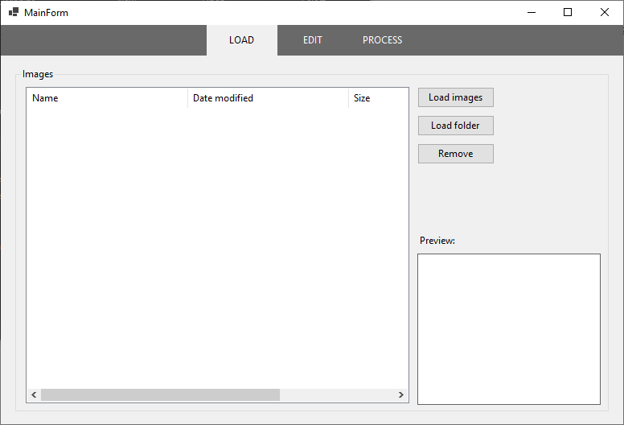
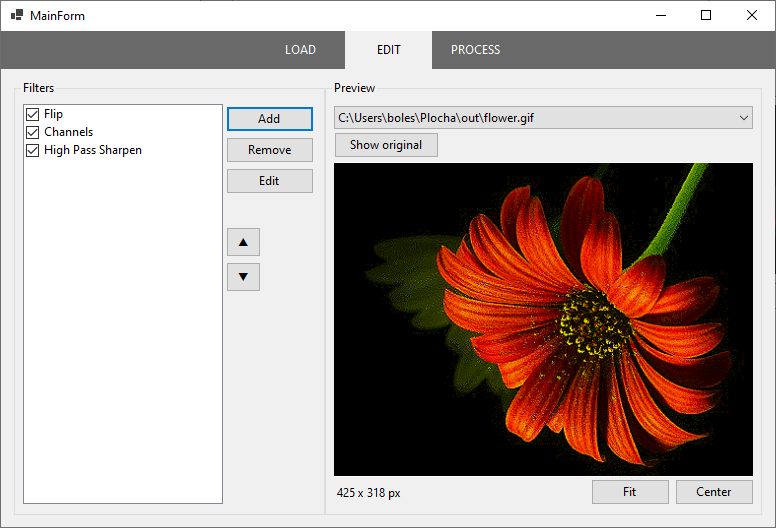
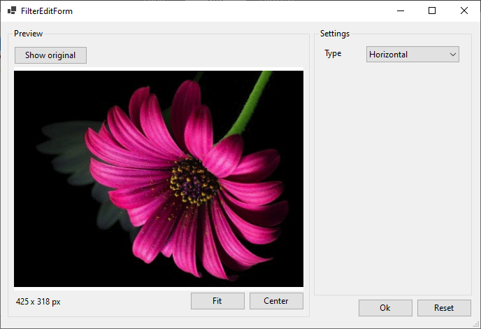
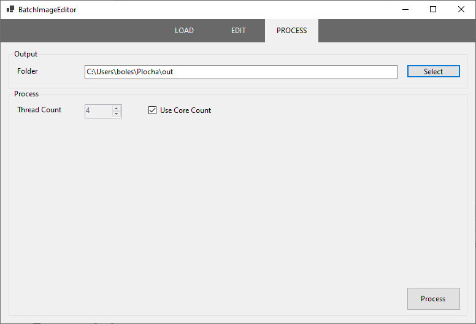
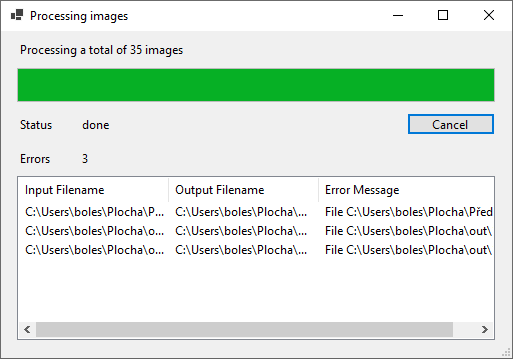

BatchImageEditor
BatchImageEditor je jednoduchý editor pro větší množství obrázků najednou. Nahrajete své obrázky, zvolíte některé z nabídnutých úprav a necháte program obrázky zpracovat. Aby byl celý proces rychlejší, umožňuje aplikace spouštět výpočet paralelně.
Program je napsán v jazyce C# jako okenní Windows Forms aplikace.
Obsah
Sestavení
Sestavení programu můžete provést ve Visual Studiu nebo pomocí příkazové řádky:
xxxxxxxxxx> dotnet buildTesty můžete spustit příkazem:
xxxxxxxxxx> dotnet testNávod k použití
Program spustíte otevřením výsledného *.exe souboru po sestavení nebo pomocí příkazové řádky:
xxxxxxxxxx> dotnet runOtevře se okno editoru se scénou pro načítání obrázků.

Na vrchní části okna se nacházejí tlačítka pro změnu scény. Kliknutím na některé z nich můžete kdykoliv přepnout mezi scénou pro načítání obrázků (LOAD), jejich úpravu (EDIT) a konečné zpracování (PROCESS).
Načtení obrázků
Načítání souborů probíhá ve scéně LOAD.

Obrázky můžete načíst jednotlivě tlačítkem Load images nebo jako celou složku tlačítkem Load folder. Informace o souborech se pak objeví v seznamu nalevo. Pokud některý ze souborů v seznamu označíte, ukáže se náhled obrázku vpravo dole. Označené soubory můžete odebrat ze seznamu tlačítkem Remove.
Mezi podporované formáty obrázku patří JPEG, PNG, BMP a GIF.
Úprava obrázků
K úpravě obrázků slouží scéna EDIT.

V levé části okna můžete upravovat seznam filtrů. Pro přidání filtru použijte tlačítko Add a v zobrazeném menu vyberte požadovaný filtr. Označené položky můžete odebrat pomocí tlačítka Remove nebo upravit kliknutím na Edit. Pokud filtr nechcete odstranit, ale pouze vynechat z výpočtu, využijte zaškrtávacího tlačítka vedle názvu položky. Jednotlivými filtry můžete v seznamu posouvat nahoru a dolů pomocí tlačítek s šipkami, čímž změníte pořadí jejich vykonávání. Filtry se na obrázek aplikují vždy v pořadí shora dolů.
V pravé části okna je náhled obrázku. Obrázek pro náhled můžete zvolit na vysouvací liště v horní části. Mezi původním a zpracovaným obrázkem můžete přepínat tlačítkem Show original / Show preview. Pro zobrazení náhledu jsou dvě volby Fit (natáhnutí obrázku na velikost plochy) a Center (zobrazení obrázku doprostřed plochy v originální velikosti).
Při výběru nového filtru pomocí Add nebo úpravy existujícího pomocí Edit se zobrazí okno pro nastavení filtru. Například pro filtr Flip vypadá nastavení následovně:

V levé části je náhled obrázku, v pravé je nastavení filtru. Položky nastavení se pro každý filtr liší. Pro Flip je to typ převrácení, pro Channels je to změna jednotlivých barevných kanálů, atd.
Kliknutím na Ok se filtr s daným nastavením přidá do seznamu. Pomocí Reset se nastavení změní zpět na výchozí. Zavřením okna volbu zrušíte a změny nebudou uloženy.
Zpracování
Ve scéně Process se nastavuje a provádí finální zpracování obrázků.

Zvolte cestu k výstupní složce pomocí tlačítka Select, nebo ji napište přímo do vstupního pole. Nastavit můžete i maximální počet vláken, který se použije na výpočet. Ve výchozím nastavení je zaškrtnuté Use Core Count, což znamená, že se použije stejný počet vláken, jako je počet jader procesoru na daném počítači. Odškrtnutím se povolí zápis do pole Thread Count, kde můžete nastavit počet vláken manuálně. Maximum je však dvojnásobek celkového počtu jader. Pokud zvolíte pouze 1 vlákno, výpočet bude probíhat sekvenčně a reakce editoru se velmi zpomalí.
Kliknutím na Process se zahájí výpočet a otevře se nové okno s detaily:

Ve vrchní části okna můžete sledovat postup. Proces můžete kdykoliv přerušit tlačítkem Cancel nebo zavřením okna. Dole můžete vidět seznam chyb, které při výpočtu nastaly. Až výpočet skončí, zobrazí se stav done a okno můžete zavřít.
Vývojová dokumentace
Následuje vývojová dokumentace pro programátory, která shrnuje nejdůležitější problémy a slouží jako úvod před ponořením se do zdrojového kódu aplikace. Nedílnou součástí jsou i komentáře v kódu, které mohou detailněji popisovat jednotlivé třídy a jejich metody.
Struktura programu
Program je dohromady složen z 5 projektů, z toho jeden je projekt xUnit s testy a jeden je projekt benchmarků s použitím knihovny BenchmarkDotNet.
Zbývající 3 projekty už přispívají ke kódu editoru:
- ImageFilters - knihovna pro image processing.
- BatchImageEditor - editor pro dávkovou úpravu obrázků využívající knihovnu ImageFilters.
- ThrowHelpers - knihovna obsahující pomocné třídy pro vyhazování výjimek. Není nijak zvlášť důležitá, proto nebude dále zmíněna.
Projekt ImageFilters
Účelem knihovny ImageFilters je zpracování obrázků pomocí filtrů. Tyto operace mohou být velmi náročné a jedním z hlavních problémů bylo právě balancování rozšiřitelnosti a výkonu.
Tento projekt mimo jiné obsahuje třídy pro paralelní zpracování obrázků. Na jediný obrázek se musí filtry aplikovat sekvenčně jeden za druhým. Pokud je obrázků více, může být seznam filtrů aplikován na každý z nich ve stejnou chvíli.
Filtry
Pro kompatibilitu s Windows Forms byly použity třídy a struktury ze jmenného prostoru System.Drawing. V něm je obrázek reprezentován třídou Bitmap, ale přístup k jejím datům pomocí metod GetPixel a SetPixel je velmi pomalý. Pro náročné operace jsou k dispozici metody LockBits a UnlockBits, které zabrání garbage collectoru přesouvat data obrázku a umožní tak přístup pomocí pointerů. Nakonec bylo použito řešení ze stackoverflow, které zavádí třídu DirectBitmap s přímým přístupem k datům v bufferu. Tento způsob je jednodušší a dokonce i rychlejší než zamykání, což bylo vyzkoušeno v projektu s benchmarky.
Důležitým rozhraním je IImageFilter, které předepisuje jedinou funkci void Apply(ref DirectBitmap image) V některých případech je nutné vytvořit obrázek nový a starý smazat, jindy stačí operaci vykonat přímo na vstupním obrázku. Aby bylo jasné, že zavoláním této funkce se vzdáváme obrázku, je předáván jako reference. Všechny filtry implementují rozhraní IImageFilter.
Některé filtry, např. ResizingFilter, používají návrhový vzor Strategy. Je definováno rozhraní reprezentující algoritmus, který se nějakým způsobem použije na filtrování obrázku. Pro změnu velikosti je to např. IResizingAlgorithm, který podle vstupního obrázku spočítá jeho výstupní velikost. Toto rozhraní implementují FixedResizing a ResizingByFactor, které počítají novou velikost jako fixní počet pixelů, respektive jako násobek staré velikosti.
Jiné filtry jsou rozšiřitelné pomocí dědičnosti. To platí pro LinearFilter, jehož potomci mají společné to, že definují matici vah, která je jako okno "přiložena" na pixel. Výstupní barva tohoto pixelu bude spočítána jako součet barev pixelů vynásobených přiloženými vahami. Odvozené třídy volají metodu SetKernel, čímž danou matici nastaví.
Filtry, u kterých se další rozšíření nepředpokládá, ale u kterých je potřeba rozlišit způsob chování, mají na vstupu hodnotu typu enum. Pro převrácení obrázku (FlipFilter) je to například typ FlipType s hodnotami Horizontal, Vertical a Both.
Paralelní zpracování obrázků
Třídy pro zpracování obrázků byly vytvořeny s vědomím, že budou výsledky průběžně hlášeny uživateli, a tomu byly také přizpůsobeny.
Třída ImageProcessingJob představuje úlohu na zpracování obrázku, která zahrnuje i jeho načtení a uložení. Tento proces může být zrušen, čehož je dosaženo pomocí delegátů (Func<bool> ShouldCancelFunc), kterých se třída průběžně dotazuje. Místo toho, aby při chybách vznikaly výjimky, jsou spouštěny delegáty pro selhání s chybovou zprávou a také úspěch, pokud výpočet bez problémů doběhl až do konce.
Úlohy jsou paralelizovány pomocí třídy BatchProcessor, která volá metodu System.Threading.Tasks.Parallel.Foreach na kolekci ImageProcessingJob.
Stará řešení a jiné poznámky
DirectBitmap byla dříve implementována také pomocí návrhového vzoru Strategy za účelem rozšíření pro různé formáty pixelu (System.Drawing.Imaging.PixelFormat). DirectBitmap byla vytvořena z instance Bitmap a v jejím konstruktoru byl zvolen algoritmus (strategy), který z pozice v bufferu bytů dokázal najít a spočítat barvu pixelu. Tento postup se ukázal jako příliš komplikovaný a značně zpomaloval výpočty, především kvůli volání funkce z interface pro každý pixel. DirectBitmap proto používá jediný formát, na který je obrázek převeden a po zpracování se převede zpátky na původní.
ColorAdjustingFilter používá IColorAdjuster pro výpočet nové barvy pixelu z pouhé znalosti jeho staré barvy. I tady se ukazuje vzor Strategy jako přehnaný, protože třída ColorAdjustingFilter není vůbec složitá a ušetření kódu tímto způsobem je zanedbatelné.
Projekt BatchImageEditor
Delší čas jsem strávil rozhodováním, jaký návrh vybrat pro editor. Hlavním kandidátem byl návrhový vzor MVP, ale nepodařilo se mi vymyslet, jak jednotlivé komponenty propojit. Nakonec jsem se rozhodl komponenty rozdělit do samostatných UserControl, kde vnější UserControl ovládá pomocí rozhraní další UserControl-s, která sama vlastní. Tímto způsobem je hlavní formulář rozdělen na scény, které jsou dále děleny na další samostatné části. Některé komponenty tak mohly být použity na více různých místech, jako například náhled obrázku.
Nastavení filtrů
Jedním z problémů bylo propojení knihovny ImageFilters a umožnění uživateli jednotlivé filtry nastavovat. Nastavení musí být uložena v polymorfním seznamu, kde jsou připravena na další úpravu.
Všechna nastavení byla vytvořena jako UserControl-s se společným rozhraním definovaným v abstraktní třídě FilterSettingsBase a společnou implementací (částečnou) v odvozené generické třídě FilterSettings<TModel>. Každé nastavení obsahuje model, ve kterém jsou uložena data nutná pro vytvoření filtru. Tyto modely mají společné rozhraní IFilterSettingsModel<TModel>, které jim předepisuje funkci IEnumerable<IImageFilter> CreateFilters(). Pokud je nastavení filtru potvrzeno uživatelem, model se uloží a nastavení (UserControl) se začlení do seznamu, kde je připraveno na další použití.
Toto řešení má háček v tom, že kvůli abstraktním a generickým předkům (FilterSettingsBase a FilterSettings<TModel>) nelze nastavení zobrazit v designeru Visual Studia. Provizorním řešením je při práci s designerem předka dočasně nahradit za UserControl.
Při testování aplikace na různých počítačích vyvstaly problémy s rozlišením. Ty byly vyřešeny uzavřením komponent do Panel-ů, kterým byla nastavena vlastnost Dock na hodnotu jinou než None.
Paralelní výpočty v UI
Za zmínku stojí třída UIUpdater, která byla použita pro asynchronní výpočet náhledu obrázku. Pokaždé, když uživatel změní seznam filtrů nebo nastavení jednoho z nich, vytvoří se nový obrázek, na který se aplikují všechny filtry a výsledek se ukáže v náhledu. Tato operace může být drahá už při použití jednoho filtru, natož ve chvíli, kdy uživatel pracuje s větším množstvím filtrů. Proto je žádoucí, aby se neprováděla sekvenčně, čímž by brzdila celou aplikaci. Aktualizace nemohou být spouštěny nezávisle. Musí být totiž zajištěno, že nová úloha nepředběhne starší, jinak bychom v náhledu viděli nejprve novější a poté starší obrázek. Řešením není jednoduchá fronta čekajících Task-ů, protože ta by mohla narůstat rychleji, než by se úlohy stačily dokončovat - například při rychlé změně výšky a šířky obrázku.
UIUpdater spouští najednou pouze 1 aktualizaci a ukládá si 1-prvkovou čekající frontu. Pro začlenění nové aktualizace do "fronty" vyžaduje UIUpdater funkci (delegáta), která vrací Task. Tento Task už musí být rozdělený na paralelní část (výpočet náhledu) a sekvenční část (ukázání náhledu v okně) volajícím pomocí pokračování (continuations). Při prvním zavolání se tento Task spustí a nyní běží jeho paralelní část v pozadí. Uživatel provedl změnu a UIUpdater je požádán o začlenění nové aktualizace. První Task ale stále běží, proto je delegát na výrobu druhého Task-u uložen do proměnné jako čekající úloha. Uživatel opět provedl změnu a UIUpdater je potřetí dotázán o začlenění nové aktualizace, přičemž ta první stále není hotová. Tato třetí úloha se zapíše do čekací fronty a tím se zahodí druhá úloha. Nyní konečně skončila první aktualizace. V jejím pokračování se kontroluje, jestli je nějaká úloha v čekací frontě. Protože třetí úloha je zapsána jako čekající, je v tomto pokračování spuštěna a čekací místo se uvolní pro další úlohu.
Poznámky k návrhu
Návrh editoru se postupem času ukázal jako nevhodný, protože je z velké části špatně testovatelný a chyby se v něm velmi špatně odhalovaly. Lepším návrhem by byl zmíněný MVP, který odděluje konkrétní pohled (View) od jeho prezentační logiky (Presenter) a dat (Model). Musela by ale být nějakým způsobem vyřešena komunikace mezi jednotlivými Presentery a také vnoření jednotlivých MVP celků. Kupříkladu scéna obsahuje další komponenty, se kterými musí komunikovat, případně i dané komponenty musí komunikovat mezi sebou.
Pohled zpět a možná vylepšení
Cílem tohoto projektu bylo procvičení více-vláknového programování a malý výlet do světa UI a grafiky. Z mého pohledu jsem splnil původní zadání specifikace, ale ukázalo se, že moje nároky byly příliš vysoké a nedostal jsem se k některým pokročilejším prvkům.
Ačkoliv jsem se domníval, že pro image processing budu používat Task-y, po zvážení jsem naprogramoval filtry sekvenčně a nechal jsem BatchProcessor výpočet zparalelizovat pomocí Parallel.Foreach. Task-y se mi poté hodily až pro uživatelské rozhraní.
Chtěl jsem vytvořit vhodný návrh pro UI, což se mi nepodařilo a skončil jsem s rozdělením na UserControl-s. Pro lepší rozšiřitelnost a testovatelnost by bylo zapotřebí komplexnějšího návrhu.
Původně jsem se chtěl dostat k zajímavějším obrázkovým filtrům, například k ostření nebo různým efektům jako je olejomalba. Překvapilo mě, jak jsou pokročilejší filtry komplikované a dostupnými zdroji bývají spíše vědecké práce. Nakonec mi na přidávání těchto zajímavějších filtrů nezbyl čas.
Mezi možné způsoby, jak program vylepšit, patří:
Vložení textu do obrázku.
Efekty:
- Olejomalba, mozaika, emboss, ...
- Uživatelem definovaný lineární filtr (matice).
Masky pro ořezávání složitějších tvarů z obrázku.
Uložení seznamu filtrů jako šablony, která může být načtena a použita znovu.
Přejmenování obrázků podle data poslední změny, pořadí ve složkách, nebo jiným způsobem.
Dodávání nových filtrů pomocí pluginů.